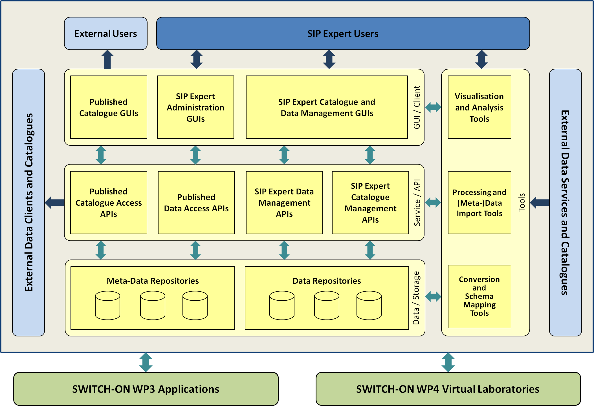

switchonproject website on github.io
This is the projects page of the Spatial Information Platform (SIP) of the SWITCH-ON EU FP7 collaborative project.
One of the major objectives of the SWITCH-ON Project is to facilitate the use of open data by hydrological research communities. One major hurdle to overcome is that data are produced for a purpose specific to the data owner. However, this purpose might be very different from the intended use by others. The existence of well-defined and described data and tools to transform the original data into something fit for use by others is a basic requirement for the resolution of this issue. The approach of SWITCH-ON to this problem is to provide a central software component to find data and tools that in combination can be used to produce, use and republish so called repurposed data. Obviously this central software component has to support a number of activities e.g. to publish, find and gain access to open data and tools. In SWITCH-ON Project the one-stop-shop for open and repurposed data is called SIP (Spatial Information Platform).
The Architecture of the Spatial Information Platform is depicted in the figure below. For more information, please refer to the document D2.1 “Spatial Information Platform and Application Programming Interface”, which will eventually be made available on the SWITCH-ON Portal. The components implemented by cismet and hosted on GitHub as separate projects are listed below.

The following Software Components of Spatial Information Platform implemented by cismet are currently hosted on GitHub as separate projects: